中電低碳駕駛歷程
中電致力透過公眾教育、以及與政府和社會各界合作，在香港推行潔淨運輸。在兼顧運作需要的同時，我們亦會在汽車團隊中繼續引進更多環保的車輛。
1984
首度於中電工作車隊引入2輛電動車
(Bedford CF 電動貨車)
(Bedford CF 電動貨車)
分批引入13輛電動車到中電工作車隊
(首批引入中電工作的電動車)
(首批引入中電工作的電動車)
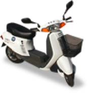 中電工作車隊中，包括 Leyland roadrunner，J5 Peugeot RHD 及電動電單車等
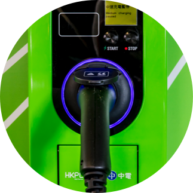
1997
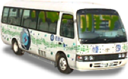截至1997年度，中電擁有共13輛電動車
(電動小型巴士)
(電動小型巴士)
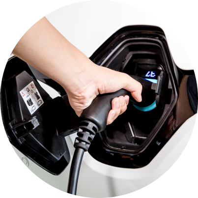
2000
將旗下柴油車輛陸續改用超低硫柴油
2002
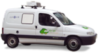 進一步使用電動車
(2002年添置了2部電動貨車作工作車試用)
(2002年添置了2部電動貨車作工作車試用)
2004
中電決定以更環保的汽油燃料貨車，陸續取代中電的150輛仍以柴油為燃料的貨車
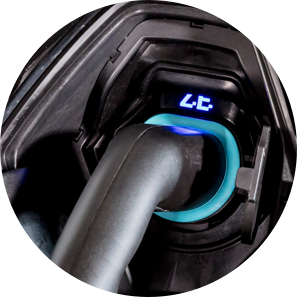
2005
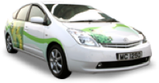 率先引入油電混合電動車
(由2005年起，中電已率先開始使用十分環保的豐田Prius油電混合電動車)
(由2005年起，中電已率先開始使用十分環保的豐田Prius油電混合電動車)
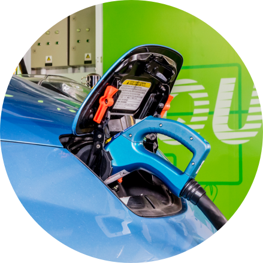
2009
中電已引入了25輛油電混合電動車，代替部分已到期更換的傳統汽油車
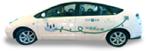 充電式油電混合電動車充電式油電混合電動車
(中電於2009年首度將車隊中的1輛油電混合車改裝成充電式油電混合車)
(中電於2009年首度將車隊中的1輛油電混合車改裝成充電式油電混合車)
2010
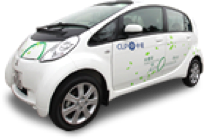 中電於2010年初引入10輛三菱iMiEV電池電動車
中電於2010年8月再將車隊中的5輛油電混合動力車改裝成充電式電式油電混合動力車
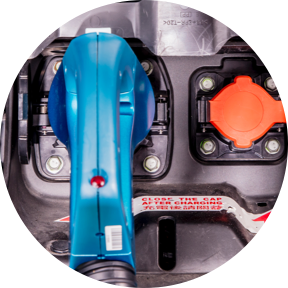
2011
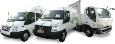 中電於2011年初引入SMITH廂式貨車，貨車和小巴
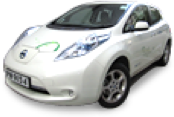 中電於2011年7月添置了10輛日產Leaf電動車，進一步擴充公司的電動車隊
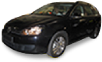 2011年10月，中電引入全港第一部Volkswagen Golf Variant改裝電動車至車隊
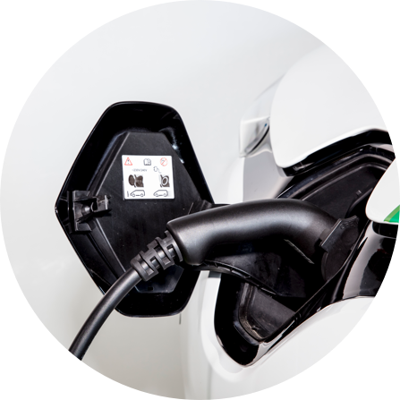
2012
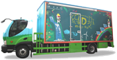 由10噸電動貨車改裝而成的升級版「綠D班」於2012年9月啟航
2013
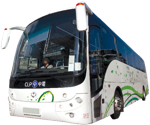 中電於2013年5月引入全港首架49座純電動旅遊巴士，乃推動本港綠色運輸交通的一項新猷
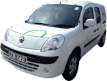 中電於2013年5月引入1輛雷諾廂式電動貨車
2017
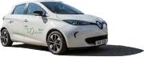 中電於2017年引入15輛雷諾Zoe純電電動車